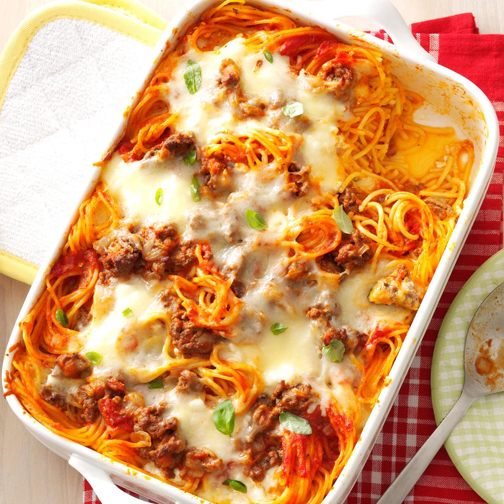

Baked Spaghetti Recipe
Go back

Description
Comforting baked spaghetti recipe with plenty of melted cheese — the perfect dish for potlucks, family gatherings, or a weeknight dinner.
Ingredients
- Spaghetti
- Ground beef
- Onion
- Meatless spaghetti sauce
- Spices and seasonings
- Parmesan cheese
- Cottage cheese
- Mozzarella cheese
Steps
- Cook the noodles.
- Brown the beef.
- Whisk the eggs, cottage cheese, and parmesan.
- Layer half noodles/beef and the other cheeses and mixture.
- Cover in foil and bake for 25 minutes.